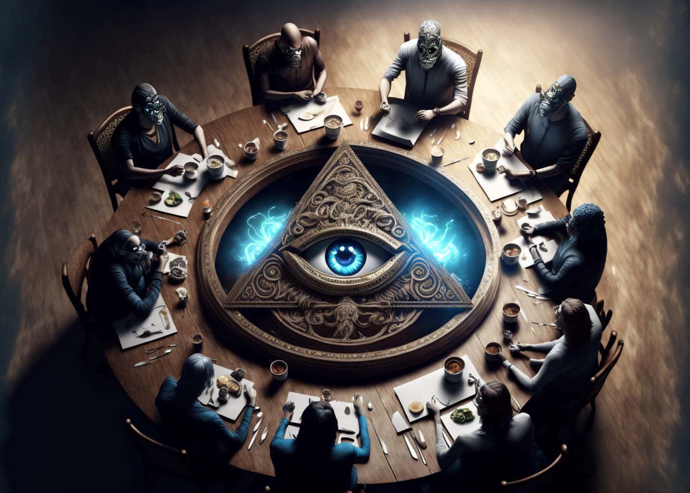

Los Illuminati
Los Illuminati son uno de los grupos más misteriosos y enigmáticos de la historia, rodeados de teorías conspirativas que los vinculan con el control secreto del mundo. Originalmente fundados en Baviera en 1776 por Adam Weishaupt, los Illuminati buscaban promover la razón, la libertad y la secularización de la sociedad frente a la influencia religiosa y monárquica. Sin embargo, con el tiempo, se ha tejido una narrativa mucho más oscura: la idea de que esta sociedad secreta sobrevivió a lo largo de los siglos y se infiltró en gobiernos, corporaciones y organizaciones internacionales con el objetivo de instaurar un Nuevo Orden Mundial.

Según las teorías modernas, los Illuminati manipulan eventos políticos, económicos y sociales a nivel global para concentrar el poder en pocas manos. Se les atribuye la planificación de guerras, crisis financieras y movimientos sociales estratégicos, siempre con fines de control y dominación. Los símbolos asociados a los Illuminati, como el ojo que todo lo ve o la pirámide, se encuentran en monedas, edificios emblemáticos y documentos históricos, alimentando la idea de su influencia oculta y omnipresente.
Los conspiracionistas también sostienen que los Illuminati están detrás de figuras públicas influyentes, desde líderes políticos hasta celebridades del entretenimiento, quienes servirían como “agentes” para manipular la opinión pública y normalizar ideas que favorezcan sus objetivos. Además, se dice que utilizan rituales secretos, redes de comunicación clandestinas y símbolos codificados para coordinar sus actividades y mantener su existencia oculta a la población general.
Una de las versiones más populares de la teoría afirma que los Illuminati buscan unificar todas las religiones bajo un mismo sistema de creencias global, controlando la moral y la espiritualidad de la humanidad. También se relacionan con tecnologías avanzadas, inteligencia artificial y vigilancia masiva, sugiriendo que la sociedad moderna estaría siendo observada y guiada de manera encubierta para consolidar el poder de este grupo secreto.
Aunque no existen pruebas concluyentes de la existencia de los Illuminati como organización operativa hoy en día, su historia, símbolos y supuestas acciones han inspirado innumerables libros, películas, documentales y debates. La fascinación por los Illuminati refleja la inquietud por el control oculto, la manipulación social y los secretos de las élites, convirtiéndolos en un referente obligado de las teorías de conspiración modernas y del imaginario colectivo sobre sociedades secretas.